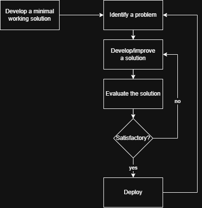

A methodology to properly select which problems to solve. Problem and Solutions Records are used to guide and document the thought process.
Introduction
This is proposed in the context of machine learning projects but the approach generalized more broadly. In machine learning projects, we typically follow a process like this:

The minimal working solution performs the task minimally but does not meet the performance targets and/or other requirements. Finding the problems and solving them is then an iterative process.
In practice, however, following the approach naively can lead to unsatisfactory outcomes, where time and resources are wasted on unproductive directions.
Example 1 - Problem is not real
We develop a solution where a drone is used to produce 3D surface models from aerial imagery. We observe that poor imagery was produced during a day with light wind. Since robustness to light wind is a key requirement, we start working on stabilization approaches. After a few weeks, we realize that the propeller on that day was damaged, leading to mechanical vibration. The wind was not the cause of the problem. In fact, the stabilization algorithm is already very good.
Example 2 - Problem Is not worth solving
We detect faces in images captured in an app by users. Analyzing metadata, we find that the detection algorithm does not work at all with a specific version of android phones. We rush to solve the bug and implement a solution successfully. We then realize that an android update was planned to solve the bug and was deployed in the meantime.
Example 3 - Gains are not measurable
We observe that labels are not very accurate on a specific type of image input. This explains why our model performs poorly. We spend a month developing a promising unsupervised solution. Now, to evaluate it, we need a dataset with very accurate labels. We then realize that the only method to produce accurate labels, a gold standard technique, is way too costly for us. We can’t assess the performance of our solution.
Such examples arise quite often. Some are easy to detect early, but some are more subtle.
We propose below a methodology to reduce the likeliness of such unsatisfactory outcomes.
Such methodology can also be beneficial to document our process (e.g.: answer “what was the evidence about that problem already?”) and the work being done in a given project (e.g.: providing answers to a client asking what was done in the past few months).
Still, it’s important to keep in mind that the rigor with which we analyze problems should not be pushed to the extreme in all cases. This is more like a slider that we need to adjust properly, based on various factors such as the project importance and complexity, the time required to develop the solution vs. the time to properly assess the problem, etc.
The Methodology
The methodology consists in producing Problem and Solutions Records (PSRs). These documents should be concise but links to supporting work can be provided. The documentation approach is inspired by ADRs1. We use a markdown format.
The structure
Directly in our repository, we put a subdirectory:
psr/
0001_problem-title/
problem.md
solution_01_solution-title.md
solution_02_solution-title.md
...
Problem Records have this structure:
---
title: The title
status: Draft
function: robustness to changing lighting conditions
solution: ''
---
## Problem demonstration
...
## Test Construction
...
Solution Records have this structure:
---
title: The title
status: Draft
---
## Approach
...
## Test Result
...
## Discussion
...
The Records
Problem Record
Before spending any time working on a solution, we first produce the problem record.
Once the problem record is completed and the test is constructed, the status should be changed from Draft to Opened. From that point on, the test is frozen. If the test turns out to be genuinely flawed mid-flight and must be modified, a notice must be added in the test construction section with the reason an the date.
- Frontmatter
Key informations are provided in the markdown frontmatter. For example
---
title: The title
status: Draft
function: robustness to changing lighting conditions
solution: ''
---
title: brief title describing the problem at hand.
status: problem status among these:
Draft: working document to discuss.Opened: Ready for solutions to be developedRejected: The problem is considered not worth solvingSolved: A satisfactory solution was found (a link should be provided)
function: When a Functional Specification Document (FSD) or similar is used, this should indicate what function this problem hinder.
The related function ensures that working on the problem solves something the client needs and something where the return on investment was already considered sufficient. It can also help determine the priority of the problem.
solution: If the problem is solved, this indicates the chosen solution.
- Problem Demonstration
A demonstration of the problem. This should describe the problem, offer sufficient evidence for it and provide arguments. The demonstration should be convincing. In order to build confidence about the nature and the existence of the problem, we should try to falsify it. Here are examples of questions worth asking:
- Is the data anecdotal?
- Is the drop in performance statistically significant?
- Are the labels used to assess the performance trustworthy?
- Is the problem real but not worth solving?
Such a demonstration helps reduce the risk that we work on a problem that actually isn’t one.
- Test Construction
Consider that a solution was found. We would like to say things like the solution increased the accuracy from 75% to 92% or the solution completely eliminated the bug occurring when a different setup was used.
To claim such a thing, we must construct a test where both the old solution and the new one can run. Construct that test now, before working on the solution. Test the current solution on it right away and record the results.
This step avoids the scenario where we realized only afterwards that we can’t easily quantify a gain in performance. It also prevents us from selecting a test biased to our solution. This is a preregistration2 approach.
Solution Record
Then, when a solution is developed and deemed complete, we produce a solution record (this is a proposal for a solution).
- Frontmatter
Key informations are provided in the markdown frontmatter. For example:
---
title: The solution title
status: Draft
---
title: brief title describing the solution proposal, helpful to distinguish solutions.
status: the status of the solution. Here are possible status:
Draft: working document to discuss.Final: solution proposal deemed completed.
- Approach
A brief description of the approach. Links can be provided here.
- Test Result
A summary of the results for the test provided in the problem record. This must be an objective description. Links can be provided here.
- Discussion
A discussion around the test results. Here, context can be provided, some ideas about what works and what didn’t, what to do next, etc.
Example
Provide examples (in other pages maybe?)
References
Following should be referenced. Should explain how these relate to the proposed methodology.
https://en.wikipedia.org/wiki/DMAIC
https://en.wikipedia.org/wiki/SMART_criteria
https://en.wikipedia.org/wiki/Preregistration_(science)
https://www.cos.io/initiatives/prereg
https://www.pnas.org/doi/10.1073/pnas.1708274114
…
-
architecture decision records (ADRs): https://www.cognitect.com/blog/2011/11/15/documenting-architecture-decisions ↩︎
-
preregistration: https://en.wikipedia.org/wiki/Preregistration_(science) ↩︎